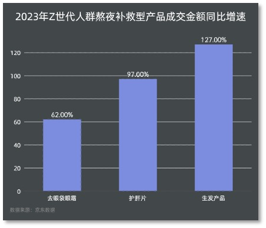
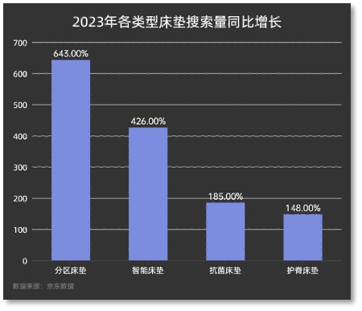
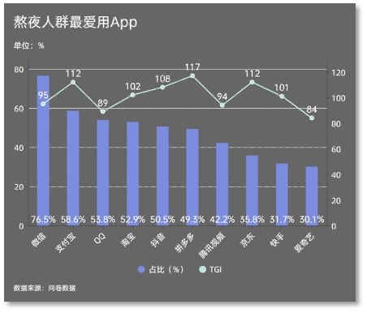
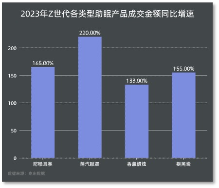

刺⽿的闹钟⼜开启了我的⼀天，晕乎乎地按灭智能⼿表的脑中，睡眼朦胧地check了⼿表弹出昨晚睡眠时监测的数据——⼼率92，呼吸51，⾎氧饱和度98%。嗯，喜⼈的数据，看着还算健康。
刷⽛时，我打开了睡眠app，它详细记录了我昨晚睡眠情况：共说了1次梦话，持续打呼噜13分钟，期间呼吸暂停过4次。睡眠app给出的睡眠总和评分是77分，是亚健康睡眠状态。




痛点及成因分析
娱乐购物——“没错，是我咎由⾃取想快乐”
超过6成的年轻⼈表示⽩天都被⼯作学习占据了⽣活，只有夜晚的时间才是属于⾃⼰的，⽽且⼀刷起⼿中电⼦产品就停不下来。
调查显示，公众熬夜的主要原因⼤致可以分为三类： ⼀是娱乐，⽐如刷微博/抖⾳/直播等、追剧/看⼩说、打游戏和看⽐赛，可以说霸屏式娱乐是熬夜最主要的原因；其次是⼯作和学习，选择⽐例分别为35%和17%。最后值得注意的是，因为失眠⽽熬夜的⽐例达到了25.4%，⽽在因失眠导致被动熬夜后，也有21.2%会选择进⾏娱乐。
⼯作——“不是我的错，为⽣活所迫”
夜猫⼈群城市等级分布中，⼆线及以上城市占⽐超7成，⼤城市的⽣活和⼯作压⼒让他们⽆法选择早睡。
根据数据显示，熬夜⼈群职业分布中，IT业⼈员占⽐最⾼，达23.6%，程序员与深夜代码格外般配。
以⾼学历、⾼职位、⾼收⼊⽔平为特征的“三⾼”群体熬夜问题更为突出。本科及以上学历者及⽉收⼊⼤于10K者显著⾼于市场平均⽔平，付出夜晚时间⽽收获精神和物质的满⾜。